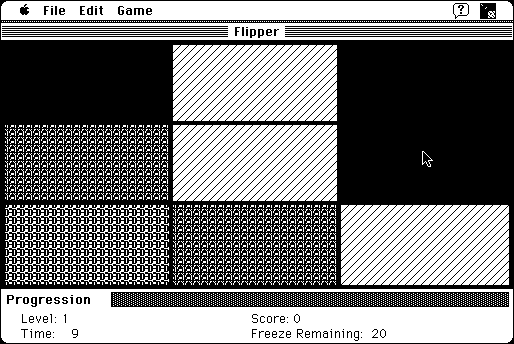

Download
Flipper.1.0.zip (66K) Flipper 2.0 repackaged into a zipped hfs disk image and checksum file. The disk image can be mounted with Mini vMac.
Flipper.1.0.sea.hqx (106K) Flipper 2.0 in the original format.
copyright: C.K. Haun, RavenWare Software
mod date: Feb 27, 1996
license: freeware, former shareware
official url :
RavenWare Software
"Your goal is to make all the rectangles in a grid the same." "You change colors or patterns by clicking in the rectangle."

If you find these downloads useful, please consider helping the Gryphel Project, which hosts them.
Here are the md5 checksums for the downloads, signed with Gryphel Key 5:
--------- GRY SIGNED TEXT --------- 976f50b98552385b6b7df1dc70b0a6d7 Flipper.1.0.zip 6193766e05b6b832fdd80c5c42fd681b Flipper.1.0.sea.hqx ------- BEGIN GRY SIGNATURE ------- Gry/4Xa8CFcUzxdN/Clgdfb28rscCUw0faulCOmdH4BV2PBzNA5dpMdDa82glkfW gN/vRNumsxypHBO9wMyeL3V3dP8/w314qKBpK9u3jgVbtHhN1B4oe+yw9eecupup Zj9eqZGa4YZrgERZ3y220NplRpkMLn9KEuUduibCKrbodDaPmfwifHg0PSavqmAS -------- END GRY SIGNATURE --------